<!--
  Generated template for the MainPage page.

  See http://ionicframework.com/docs/components/#navigation for more info on
  Ionic pages and navigation.
-->
<!-- <ion-header no-border> -->
  <!-- <ion-navbar color="light">
    <button ion-button menuToggle>
      <ion-icon name="menu"> </ion-icon>

    </button>
    <ion-title> Motivation PAM </ion-title>
  </ion-navbar> -->
<!-- </ion-header> -->
<ion-content padding>
  <div class="txtLogo">
    <div class="txt">
      Now Live
    </div>
    <div class="logo">
      
    </div>
  </div>
  <ion-list>
    <ion-item color="secondary" (click)="openOtherPage('audio')">
      <ion-thumbnail item-start>
        <div class="img">  
          
        </div>
      </ion-thumbnail>
      <h2>Radio Bethel en direct</h2>
      <p>
        <button ion-button> Live </button>
      </p>
      <ion-icon name="more" item-end></ion-icon>
    </ion-item>
  </ion-list>
  <ion-list>
    <ion-item color="secondary" (click)="openOtherPage('video')">
      <ion-thumbnail item-start>
        <div class="imgM">  
          
        </div>
      </ion-thumbnail>
      <h2>Télé Bethel en direct</h2>
      <p>
        <button ion-button>Live</button>
      </p>
      <ion-icon name="more" item-end></ion-icon>
    </ion-item>
  </ion-list>
  <ion-list>
      <!-- (click)="openOtherPage('donate')" -->
    <!-- <ion-item color="secondary" >
      <ion-thumbnail item-start>
        <div class="imgM">  
          
        </div>
      </ion-thumbnail>
      <h2>Donate to Radio TV Motivation</h2>
      <p>
        <button ion-button>Live</button>
      </p>
      <ion-icon name="more" item-end></ion-icon>
    </ion-item> -->
  </ion-list>
  <ion-card color="secondary">
    <ion-card-header>
      Social network
    </ion-card-header>
    <ion-list color="secondary">
      <button ion-item color="secondary" (click)="openOtherPage('facebook')">
        <ion-icon name="logo-facebook" item-start> </ion-icon>
        Facebook
      </button>
      <button ion-item color="secondary" (click)="openOtherPage('twitter')">
        <ion-icon name="logo-twitter" item-start> </ion-icon>
        Twitter
      </button>
      <button ion-item color="secondary" color="secondary" (click) ="openOtherPage('instagram')">
        <ion-icon name="logo-instagram" item-start> </ion-icon>
        Instagram
      </button>
      <button ion-item color="secondary" color="secondary" (click) ="openOtherPage('youtube')">
      <ion-icon name="logo-youtube" item-start> </ion-icon>
        Youtube
      </button>
  </ion-list>
  </ion-card>
    <button ion-item color="secondary" color="secondary" (click) ="openOtherPage('copy')">
      <ion-icon name="ios-copy-outline" item-start> </ion-icon>
      Copyright
    </button>
</ion-content>
